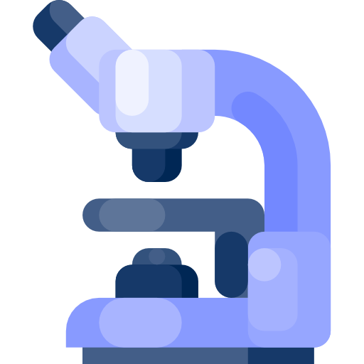
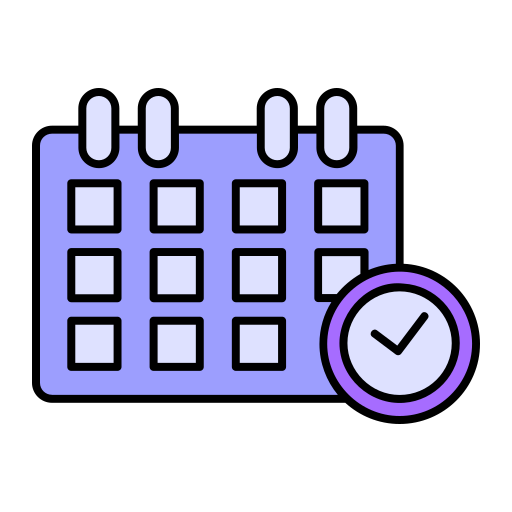
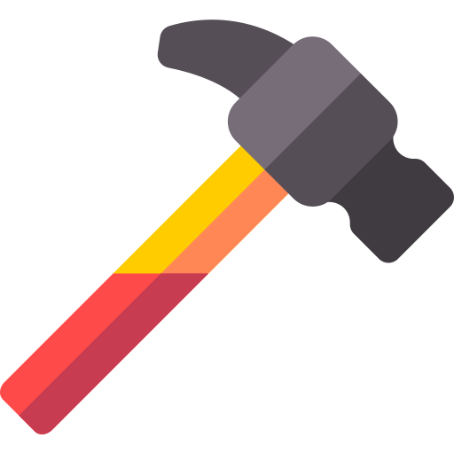
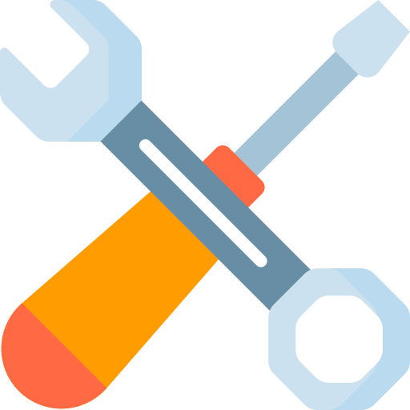

Introduction : Contexte et enjeux
Dans un environnement numérique en constante évolution, la réussite d’une application web ne se limite pas à la qualité de son code : elle dépend avant tout de la manière dont on envisage et pilote chaque étape de son existence, depuis la compréhension des besoins jusqu’à son éventuel retrait de service. Le cycle de vie d’une application web constitue ainsi un cadre méthodologique essentiel, qui garantit non seulement une conception robuste et sécurisée, mais aussi une évolutivité maîtrisée et une rentabilité maximale.
Ce document s’adresse aux équipes de projet — chefs de produit, architectes, développeurs, DevOps, testeurs et UX/UI designers — souhaitant disposer d’une vision complète et intégrée des différentes phases du cycle de vie, ainsi que des bonnes pratiques et des indicateurs à suivre pour piloter efficacement leur projet. Nous y définissons le périmètre fonctionnel (front-end, back-end, infrastructure, qualité), le périmètre organisationnel (parties prenantes, livrables), et nous illustrons comment aligner les objectifs métiers et les indicateurs clés de performance (KPI) avec les exigences non-fonctionnelles (scalabilité, performance, sécurité, observabilité).
Cette introduction pose les fondations :
1. Définition et périmètre
Définition
Le cycle de vie d’une application web regroupe l’ensemble des étapes, de la conception initiale à la mise hors service, nécessaires pour garantir qu’un service en ligne répond durablement aux besoins métiers et utilisateurs.
Périmètre fonctionnel
Front-end
Expérience utilisateur, interfaces graphiques, accessibilité.
Back-end
API, logique métier, persistance des données.
Infrastructure
Serveurs, conteneurs, plateformes cloud.
Qualité
Tests (unitaires, fonctionnels, performance), sécurité.
Périmètre organisationnel
Parties prenantes
Chefs de projet, product owners, équipes design, développement, DevOps et support.
Artefacts clés
Cahier des charges, user stories, schémas d’architecture, pipelines CI/CD, documentation vivante.
Exemple illustratif : pour un portail e‑commerce, le périmètre couvre le parcours visiteur (catalogue, panier), l’admin‑panel (gestion des produits), l’API de paiement, l’infrastructure (load‑balancer, base de données répliquée) et la conformité RGPD.
2. Objectifs métiers et KPI associés
Pour chaque projet, formaliser les objectifs métier et définir des indicateurs de performance (KPI) permet un pilotage transparent et orienté résultats.
Un KPI (Key Performance Indicator) est une métrique quantifiable qui permet de mesurer l’efficacité d’une action, d’un projet ou d’un processus par rapport à un objectif défini.
Ci‑dessous un tableau de KPIs généraux, applicable à tout type d’application web :
| Objectif métier | KPI principal | Commentaire |
|---|---|---|
| Améliorer l’engagement utilisateur | Taux d’utilisateurs actifs (DAU/MAU) | Ratio utilisateurs quotidiens / mensuels, indicateur de rétention |
| Optimiser la performance | Temps de chargement moyen (TTFB ou FCP) | Doit rester < 300 ms pour le TTFB et < 1 s pour le FCP |
| Garantir la fiabilité | Taux de disponibilité (uptime) | ≥ 99,9 % (SLA), suivi continu via monitoring |
| Réduire les erreurs | Nombre d’erreurs critiques (5xx, JS) | MTTR (Mean Time To Repair) : objectif < 30 min |
| Assurer la sécurité | Nombre de vulnérabilités critiques | Scanner SAST/DAST mensuel, objectif 0 critiques ouvertes |
| Optimiser les coûts | Coût infra par utilisateur | Suivi via facturation cloud, comparer €/DAU |
| Améliorer la qualité du code | Taux de couverture de tests (%) | Cible ≥ 80 % (unitaires + intégration) |
| Renforcer l’accessibilité | Score de conformité WCAG (%) | Audit trimestriel, viser ≥ 90 % |
| Accélérer le déploiement | Lead time for changes | Temps médian entre commit et prod, objectif < 1 h |
Astuce : pour chaque KPI, définissez un seuil chiffré clair (ex. uptime ≥ 99,9 %, couverture ≥ 80 %) et une fréquence de suivi (quotidien, hebdomadaire, mensuel).
3. Enjeux techniques (scalabilité, performance, sécurité…)
Les défis techniques garantissent que l’application reste fiable et maintenable face à la croissance et aux menaces.
Scalabilité
- Horizontale : ajouter des instances de service (containers, VM) derrière un load-balancer.
- Verticale : renforcer les ressources (CPU, RAM) d’un serveur.
Exemple : passer de 2 à 20 nœuds Docker avec Kubernetes pour absorber un pic de trafic pendant les soldes.
Performance
- Temps de chargement : optimiser les assets (minification JS/CSS, lazy-loading images).
- Caching : front-end (Service Workers), back-end (Redis, Varnish).
- Tests de charge : utiliser JMeter ou k6 pour simuler 1 000 utilisateurs simultanés.
Sécurité
- Authentification & autorisation : OAuth2, JWT, RBAC.
- Protection des API : rate-limiting, WAF (Web Application Firewall).
- Chiffrement : TLS 1.2+, chiffrement des données au repos (AES-256).
- Audit & compliance : scans automatisés de vulnérabilités (SAST/DAST), revue périodique des dépendances (Dependabot).
Résilience et robustesse
- Haute disponibilité (HA) : déploiement multi-zone / multi-région, failover automatique.
- Tolérance aux pannes : stratégies de retry, circuit breaker pattern.
Processus transverses & bonnes pratiques
DevSecOps
Culture sécurité continue…
Observabilité
Logs, métriques, tracing…
Qualité & tests
Unitaires, E2E, performance…
Dette technique
Compromis, refactoring…
Cloud & Scalabilité
IaC, autoscaling…
Accessibilité & UX
WCAG, RGAA, heatmaps…
SEO & PWA
SEO, PWA…
Feedback & Support
SLA, chatbots…
Fin de vie
Migration, archivage…
À l’issue de cette mise en contexte, nous détaillerons les grandes étapes du cycle de vie. Mais voyons d'abord quels sont les métiers impliqués dans le cycle de vie..
Métiers : Rôles et Responsabilités
Chef de projet
Responsable de la gestion des coûts et de l’efficacité des ressources, il veille à ce que les projets contribuent positivement au CA en respectant délais et budgets.
UX Designer
Améliore l’expérience utilisateur pour augmenter la satisfaction, la fidélisation et les conversions, réduisant le taux d’abandon.
UI Designer
Optimise l’esthétique et l’ergonomie de l’interface, encourage l’engagement et influence la perception de valeur du produit.
Architecte logiciel
Conçoit des architectures performantes et évolutives, réduisant les coûts de maintenance et améliorant la rentabilité.
Développeur
Implémente les fonctionnalités et optimise les performances, garantissant un produit solide susceptible de générer des revenus.
Testeur QA
Assure la qualité et la fiabilité via tests, réduisant les coûts de correction de bugs et protégeant le CA.
DevOps
Automatise les déploiements et gère l’infrastructure pour améliorer disponibilité et rapidité des mises à jour.
Administrateur système
Garantit la sécurité et la stabilité des serveurs et bases de données pour éviter les interruptions de service.
Support technique
Fournit une assistance client efficace, améliorant la fidélisation et réduisant le churn.
Équipes légales
Veillent à la conformité RGPD et aux contrats, protégeant l’entreprise des risques juridiques et amendes.
Les grandes étapes du cycle de vie
Analyse des besoins
Conception et planification
Développement
Déploiement
Maintenance et évolutions
Décommissionnement
 Analyse des besoins
La première étape du cycle de vie consiste à analyser les besoins des utilisateurs et à définir les objectifs de l'application. Cette phase implique la compréhension du public cible, des exigences métiers et des contraintes techniques. L'objectif est de poser les bases du projet en identifiant les fonctionnalités clés et en précisant les attentes des utilisateurs finaux. Une bonne analyse permet d’éviter des erreurs de conception et de s’assurer que le produit final répondra aux attentes.
Acteurs : Chefs de projet, UX/UI designers.
 Conception et planification
Une fois les besoins définis, on passe à la conception du projet. Cette étape inclut la création des maquettes visuelles, le choix des technologies à utiliser et la définition de l’architecture du système. L'architecture logicielle et le design technique sont planifiés pour s'assurer que l'application soit performante et évolutive. La planification détaillée permet de structurer le travail à venir et de coordonner efficacement l'équipe.
Acteurs : Chefs de projet, UX/UI designers, architectes logiciels, développeurs.
 Développement
Le développement consiste à transformer les maquettes et les spécifications en un produit fonctionnel. Les développeurs écrivent le code source pour implémenter les fonctionnalités, tout en garantissant la qualité du code par des tests unitaires et fonctionnels. L'intégration continue est souvent utilisée pour automatiser le processus de tests et de mise à jour du code. Cette étape est essentielle pour s'assurer que le produit respecte les exigences fonctionnelles et qu’il est stable.
Acteurs : Développeurs, testeurs QA, DevOps.
Déploiement
Une fois l’application développée, elle doit être mise en production. Cela inclut la configuration des serveurs, la gestion des bases de données et le suivi des performances en temps réel. Les outils de monitoring permettent de détecter rapidement tout problème après la mise en ligne. Le déploiement se fait souvent en plusieurs étapes pour s’assurer que l’application fonctionne correctement dans l’environnement de production sans interruptions pour les utilisateurs.
Acteurs : DevOps, administrateurs système, chefs de projet.
 Maintenance et évolutions
Après le déploiement, il est important d’assurer une maintenance continue pour corriger les bugs, effectuer des mises à jour de sécurité et optimiser les performances. Les feedbacks utilisateurs sont collectés pour améliorer l'application, en ajoutant de nouvelles fonctionnalités ou en ajustant les fonctionnalités existantes. Cette phase permet de garantir la pérennité et l’évolution de l’application tout au long de sa vie.
Acteurs : Développeurs, testeurs QA, support technique.
Décommissionnement
Le décommissionnement intervient lorsque l'application arrive à la fin de sa vie ou lorsque son service n’est plus nécessaire. Cette phase comprend l'arrêt progressif des services, la migration des utilisateurs vers une nouvelle solution et la suppression sécurisée des données. Il est essentiel de respecter les normes légales et les exigences de sécurité, comme le RGPD, pour garantir que toutes les données sensibles sont correctement supprimées.
Acteurs : Chefs de projet, administrateurs système, équipes légales.
Illustrations et cas pratiques
3.a Exemple concret du cycle de vie d’un site e-commerce
Après les phases de recherche de contenus (textes et visuels) puis l’élaboration d’un plan de site avec sa structure :
- Choisir un nom de domaine et un hébergeur de qualité
- Développement & Conception du site
- Phases de test en développement
- Mise en ligne du site
- Nouveaux tests après la mise en production du site
- Faire connaître son site dans les moteurs de recherche (SEO)
- Lier son site aux réseaux sociaux
- Actualiser son site, faire vivre son site, ajouter de nouveaux contenus régulièrement
- Faire la maintenance de son site : mises à jour techniques et suivi rigoureux
- Après deux ans, faire des évolutions sur son site Internet
- Mettre à jour les contenus, toujours travailler son référencement
- Après trois ans, faire une mise à jour majeure du site
- Après quatre ans, penser à la refonte du site Internet
- À 5 ans, un nouveau cycle de vie commence après la refonte
Cycle de vie d'un site e-commerce

3b. Les principaux écueils d’un cycle de vie mal maîtrisé
- Isoler un projet Web de la stratégie de l’entreprise le condamne à l’échec, car celui-ci est l’extension de la stratégie de l’entreprise.
- Un projet informatique est très souvent sous-estimé et dérive quasi systématiquement. C’est pourquoi il est indispensable de planifier la conception d’un vrai MVP (Minimum Viable Product) pour éprouver le cœur du projet. Cela permet par exemple d’éviter de développer de grandes fonctionnalités qui se révèlent être inutiles.
- Le manque de tests est un autre écueil en matière de développement. Ils sont souvent mis de côté en raison de contraintes de temps ou de budget. Selon une étude de Google, environ 60 % des utilisateurs supprimeront une application mobile ou quitteront un site web mobile après une seule expérience décevante.
- Il faut savoir terminer un projet : on peut être tenté de vouloir avoir le « site parfait » pour la mise en ligne. Pourtant, en faisant cela, on ne fait que retarder cette mise en ligne. Il vaut mieux phaser l’implémentation de nouvelles fonctionnalités et profiter d’une présence en ligne plus tôt.
- Une mauvaise communication entre les équipes de développement peut être préjudiciable : on peut ainsi assister au cloisonnement des équipes en charge des applications, du réseau et de la sécurité.
Conclusion
Synthèse et importance de chaque phase
Le cycle de vie d’une application web est composé d’étapes distinctes et complémentaires, chacune essentielle à la réussite globale du projet.
- Analyse des besoins : permet de cerner précisément les attentes et les contraintes, constituant la base solide du projet.
- Conception et planification : garantit que l’architecture et les choix technologiques soient adaptés et viables à long terme.
- Développement : renforcé par des tests et une intégration continue, assure la qualité et la robustesse du produit.
- Déploiement : doit être minutieusement exécuté afin d’assurer la stabilité et la sécurité de l’application en production.
- Maintenance et évolutions : permettent d’adapter continuellement l’application aux besoins changeants et d'assurer sa pérennité.
- Décommissionnement : joue un rôle crucial dans la gestion responsable des ressources et la sécurité des données.
La négligence d'une seule de ces phases peut avoir des conséquences graves sur la qualité finale de l’application, sur l’expérience utilisateur, mais aussi sur la viabilité économique du projet.
Meilleures pratiques pour optimiser le cycle de vie
Pour optimiser le cycle de vie d'une application web, il est conseillé d'adopter les meilleures pratiques suivantes :
- Gestion rigoureuse du projet : Utiliser des méthodologies telles qu’Agile ou Scrum pour faciliter la flexibilité et améliorer la réactivité face aux changements.
- Documentation exhaustive : Maintenir une documentation claire et actualisée à chaque phase pour faciliter la communication entre équipes et assurer la continuité des connaissances.
- Automatisation et intégration continue (CI/CD) : Mettre en place des processus automatisés de tests et de déploiement pour réduire les erreurs humaines et accélérer les mises en production.
- Monitoring et veille technique : Surveiller régulièrement les performances et la sécurité de l’application pour identifier rapidement les problèmes et anticiper les risques.
- Approche centrée utilisateur : Impliquer les utilisateurs finaux tout au long du cycle, particulièrement lors des phases de conception et de validation, pour s’assurer que l’application répond efficacement à leurs attentes.
- Planification stratégique du décommissionnement : Préparer dès le départ une stratégie de sortie ou de migration afin d’assurer une transition fluide et sécurisée en fin de vie de l'application.
En suivant ces bonnes pratiques, les équipes peuvent garantir une meilleure maîtrise du cycle de vie de leurs applications, maximiser leur valeur ajoutée et assurer leur succès à long terme.